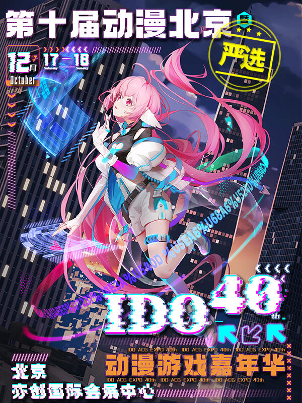

Persona and Journey Map
 The offline ACGN (Animation Comic Game Novel) Exhibition is the primary method for the ACGN industry to achieve its commercial worth. In China, the ACGN Exhibition has grown over the past few years, bringing in a lot of fans.
The ACGN industry in China has entered the outbreak phase. With an annual growth rate of 32.7%, the market size is projected to reach ￥100 billion by 2020. By 2023, the number of Pan-ACGN fans is predicted to reach 500 million. The total number of ACGN users is increasing, although the proportion of young users is constant, with up to 80% of the population under 30 years old and Generation Z constituting the largest user group.
As a typical cultural industry, the core of the ACGN industry lies in high-quality content. When ACGN incubates a well-known IP, generating related derivatives is an efficient means of maximizing its commercial worth. Since the ACGN element is often part of the virtual network, taking it offline and offering services that people can experience will increase the economic value.
The offline ACGN Exhibition has transitioned from a gathering of common fans to a gathering of fans of ACGN influencers and IP activities. The ACGN's image has become the focal point of efforts to increase its commercial value. Famous IP or ACGN influencers have a high fan loyalty viscosity. Therefore, the ACGN Exhibition is no longer a simple party. ACGN fans now go to the offline exhibition mostly to meet ACGN influencers (Character Voice Actors, Cosers, and Authors), take part in IP-themed activities, and buy limited derivatives.
You can find out more about this topic in JOURNAL 3.